année de première
On commence l’année de première par du codage en langage Python. Un premier objectif
que l’on se fixe, c’est d’être capable de réaliser en autonomie, après les vacances
de février, un premier projet dans ce langage. Les projets 2023 étaient les suivants :
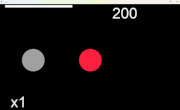
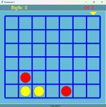
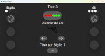
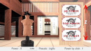
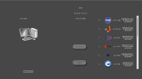
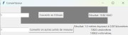
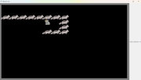
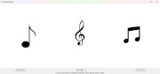
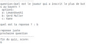
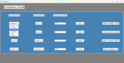
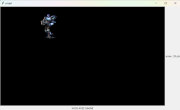
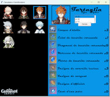
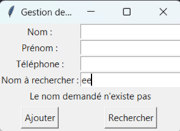
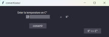
Pour arriver à ce premier objectif, de nombreux Tps permettent de réaliser des petits
codes qui permettent d’acquérir petit à petit les bases communes à tous les langages de
programmation : types de variables, boucles, tests, fonctions, tableaux et dictionnaires,
portée des variables, lecture et écriture dans les fichiers, évènements, utilisation de la
bibliothèque graphique Tkinter afin d’obtenir une interface ludique.
sur la numérisation des données : système binaire et hexadécimal, encodage des entiers, réels et des caractères,
des algorithmes typiques
Les projets terminés, on réinvestit ce qui a été vu en Python pour travailler à présent dans le domaine du Web.
Là, les façons de faire sont différentes car il s’agit de gérer un dialogue entre le navigateur d’un ordinateur
client et le serveur sur lequel est hébergé la ressource consultée. Ce serveur et cet ordinateur client peuvent être
séparés physiquement de plusieurs milliers de kilomètres, mais ils sont reliés tous deux au réseau internet.
L’objectif sera ici d’être en mesure en fin d’année, d’utiliser les langages html, css et javascript pour
réaliser des pages webs qui seront hébergés sur le serveur de ce site. Les liens suivants te renvoient sur
les pages réalisées avant 2022 et 2023 2022 2024 2023
année de terminale
L’année de terminale permet bien sûr d’approfondir et de compléter ce qui a été vu en première.
Le langage de programmation pratiqué est surtout le Python, mais peu importe le langage choisi car
ce qui est vu en Python, pourra se décliner assez facilement dans n’importe quel langage.
Une partie du programme de NSI s’intéresse à l’algorithmie. Ce mot peut faire peur, mais lorsque
l’on manipule des milliards de données, les temps de calculs peuvent rapidement devenir trop longs,
même avec des processeurs rapides. Or, en réalisant par exemple une requête sur Google ou lorsque
l’on demande l’itinéraire le plus court entre 2 villes sur Maps, les réponses sont quasiment instantanées.
Comment arrive-t-on à avoir ces résultats ? Eh bien on utilise les acquis de nos aïeux qui ont déjà planchés
sur le problème. Durant cette année de terminale on étudie et on implémente certains de ces algorithmes,
bien connus en Informatique. On écrit donc les codes Pythons correspondants et on réalise des tests
de performances sur des situations diverses.
En classe de première, les données numériques manipulées étaient mémorisées dans des variables, des listes,
des dictionnaires. En terminale, on étudie d’autres structures plus complexes et mieux adaptées dans certaines
situations. Ce sont les piles, files, les arbres et les graphes. On apprend également à exploiter les bases de
données SQL qui sont largement utilisées dans le web.
En classe de première, les codes étaient écrits en programmation dite fonctionnelle. Ils comprenaient
un ensemble de fonctions et un programme principal. S'en suivait beaucoup de variables en argument des fonctions, des problèmes
de portée des variables dans le code et la nécessité d'utiliser des variables globales.
Lorsque les codes sont importants ou lorsque l’on travaille à plusieurs il devient difficile de s’y retrouver.
En terminale, on apprend à les écrire les codes en programmation orientée objet.
Cela permet d’encapsuler les données et le code dans des classes. On obtient un ensemble composé de blocs indépendants
qui devient plus lisible, compréhensible et évolutif.
En classe de première, pour réaliser un même calcul sur les différents éléments d’une liste, on bouclait sur chaque élément. On appelle
cela du calcul itératif. En terminale, on découvre la méthode récursive. Elle permet de faire autrement
et d’obtenir des codes plus lisibles et efficaces.
On poursuit aussi l’étude sur les réseaux informatiques en s’intéressant à la problématique du routage et
à la sécurisation des communications avec le https. On travaille également sur le rôle du système d’exploitation
dans un ordinateur. Comment gère-t-il les différentes tâches, les différents processus presque en même temps.